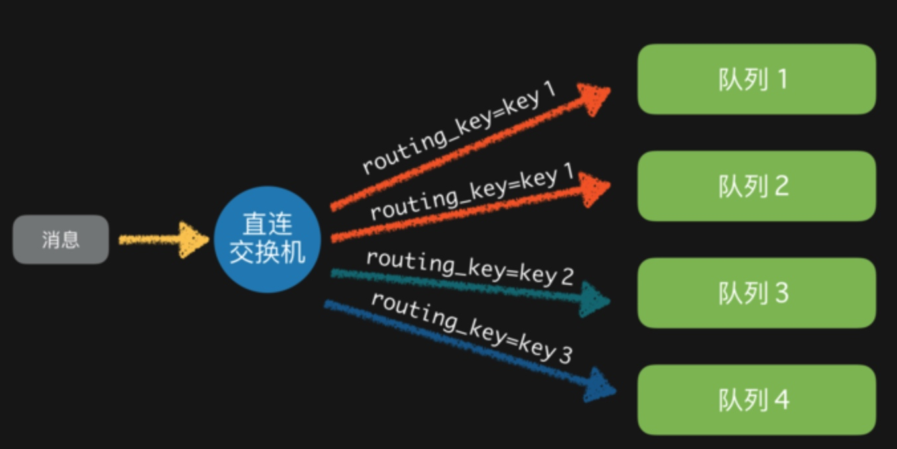
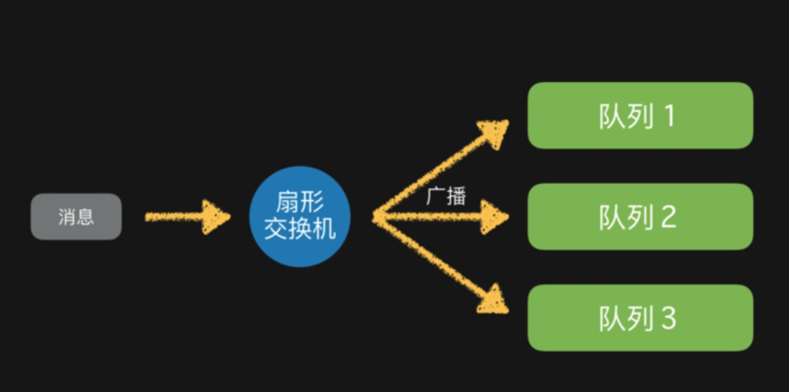
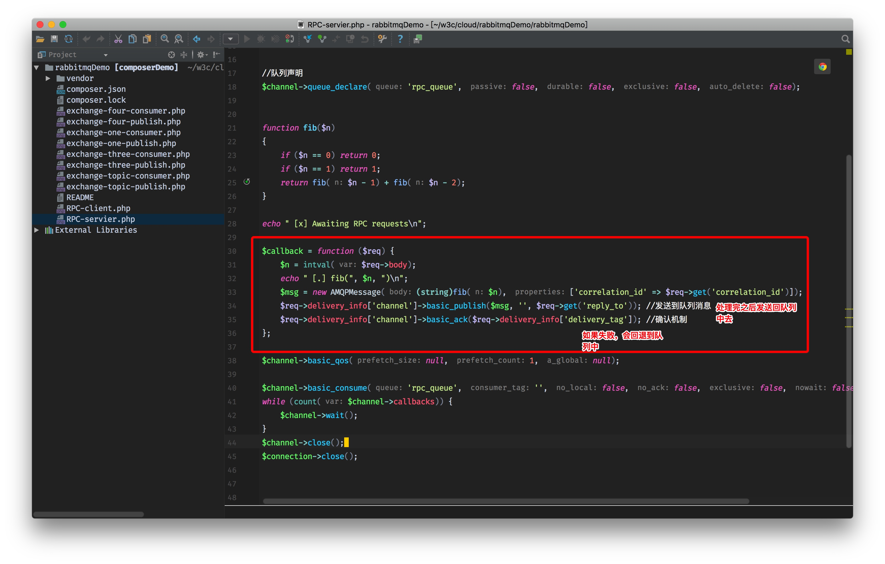
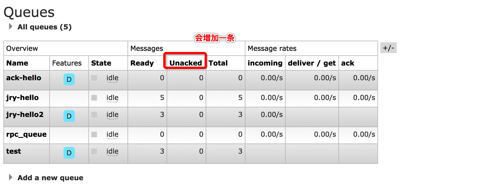
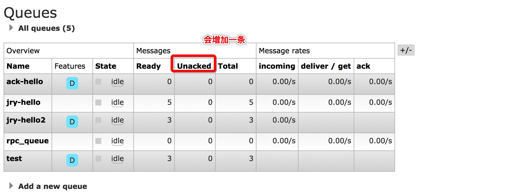
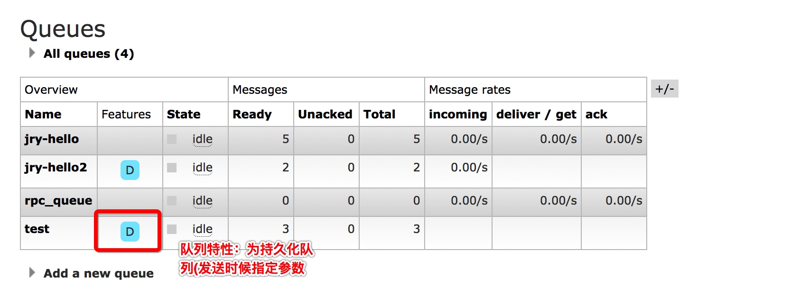

rabbitMq使用（php）
概念
RabbitMQ是流行的开源 消息队列系统
RabbitMQ是一个消息代理。它的工作就是接收和转发消息。你可以把它想像成一个邮局：你把信件放入邮箱，邮递员就会把信件投递到你的收件人处。在这个比喻中，RabbitMQ就扮演着邮箱、邮局以及邮递员的角色。
文档
本地环境
- 安装： brew install rabbitmq
设置全局路径 （zshrc）中的配置
rabbitMq
alias rabbitmq="/usr/local/Cellar/rabbitmq/3.6.11"
export PATH=$PATH:/usr/local/Cellar/rabbitmq/3.6.11/sbin启动 ： ./rabbitmq-server
默认链接端口：5672 界面默认端口：15672 http://127.0.0.1:15672/ 账号密码 guest/
Php 使用方法
概念
- Exchange：消息交换机，exchange接收到消息后，就根据消息的key和已经设置的binding，进行消息路由，将消息投递到一个或多个队列里。
- Queue：消息队列载体，每个消息都会被投入到一个或多个队列。
- Binding：绑定，它的作用就是把exchange和queue按照路由规则绑定起来。
- Routing Key：路由关键字，exchange根据这个关键字进行消息投递。
- vhost：虚拟主机，一个broker里可以开设多个vhost，用作不同用户的权限分离。
- producer：消息生产者，就是投递消息的程序。
- consumer：消息消费者，就是接受消息的程序。
- channel：消息通道，在客户端的每个连接里，可建立多个channel，每个channel代表一个会话任务。
exchange的几种交换方式（可以自己定义，具体参考官方文档）
- 扇形交换 fanout
- 直接交换 Direct
- 主题交换 topic
- 首部交换机
exchange接收到消息后，就根据消息的key和已经设置的binding，进行消息路由，将消息投递到一个或多个队列里。exchange也有几个类型，（下面从网上找了几个图方便我们理解）
完全根据key进行投递的叫做Direct交换机，例如，绑定时设置了routing key为”abc”，那么客户端提交的消息，只有设置了key为”abc”的才会投递到队列。
对key进行模式匹配后进行投递的叫做Topic交换机，符号”#”匹配一个或多个词，符号””匹配正好一个词。例如”abc.#”匹配”abc.def.ghi”，”abc.”只匹配”abc.def”。在路由选择键中可以有任意数量的字，最多255个字节。 *（星号）可以代替一个字。＃（散列）可以代替零个或多个单词。

还有一种不需要key的，叫做Fanout交换机，它采取广播模式，一个消息进来时，投递到与该交换机绑定的所有队列。
首部交换机是忽略routing_key的一种路由方式。路由器和交换机路由的规则是通过Headers信息来交换的，这个有点像HTTP的Headers。将一个交换机声明成首部交换机，绑定一个队列的时候，定义一个Hash的数据结构，消息发送的时候，会携带一组hash数据结构的信息，当Hash的内容匹配上的时候，消息就会被写入队列。绑定交换机和队列的时候，Hash结构中要求携带一个键“x-match”，这个键的Value可以是any或者all，这代表消息携带的Hash是需要全部匹配(all)，还是仅匹配一个键(any)就可以了。相比直连交换机，首部交换机的优势是匹配的规则不被限定为字符串(string)。
持久化
RabbitMQ支持消息的持久化，也就是数据写在磁盘上，为了数据安全考虑，我想大多数用户都会选择持久化。消息队列持久化包括3个部分：
（1）exchange持久化，在声明时指定durable => 1
（2）queue持久化，在声明时指定durable => 1
（3）消息持久化，在投递时指定delivery_mode => 2（1是非持久化）
如果exchange和queue都是持久化的，那么它们之间的binding也是持久化的。如果exchange和queue两者之间有一个持久化，一个非持久化，就不允许建立绑定。
参数解析
1. 公平分发
```
//同时开2个消费者，发布者发布10条消息，第一条处理20秒，其他处理格式2秒，这个时候有一个队列处理1个消息，其他会处理另外9个。默认的发布机制是平均分布
$channel->basic_qos(null, 1, null); //公平派遣 ，
$channel->basic_consume('task_queue', '', false, false, false, false,$callback);
```
2.确认机制 
no_ack = true 默认的方式是不需要确认
 

界面
队列
//第三个参数确定时候是持久化的 即使RabbitMQ重新启动，队列也不会丢失（消息保存磁盘中）
$channel->queue_declare('jry-hello2', false, true, false, false);

分布式事务的解决方案
关于分布式事务，工程领域主要讨论的是强一致性和最终一致性的解决方案。
####名字解释：
1. CAP定理 一致性 可用性(发出一个请求后，服务能在有限时间内返回结果) 分区容错性（系统一部分不可用,不会影响其它部分）
2. Base理论 （可以通过放弃系统在每个时刻的强一致性来换取系统的可扩展性。）
####一致性模型：
1. 强一致性：数据更新成功后，任意时刻所有副本中的数据都是一致的，一般采用同步的方式实现。
2. 弱一致性：数据更新成功后，系统不承诺立即可以读到最新写入的值，也不承诺具体多久之后可以读到。
3. 最终一致性：弱一致性的一种形式，数据更新成功后，系统不承诺立即可以返回最新写入的值，但是保证最终会返回上一次更新操作的值。
####解决方案：
1. 2PC 3PC
2. eBay 事件队列方案
3. TCC 补偿模式
4. 缓存数据最终一致性